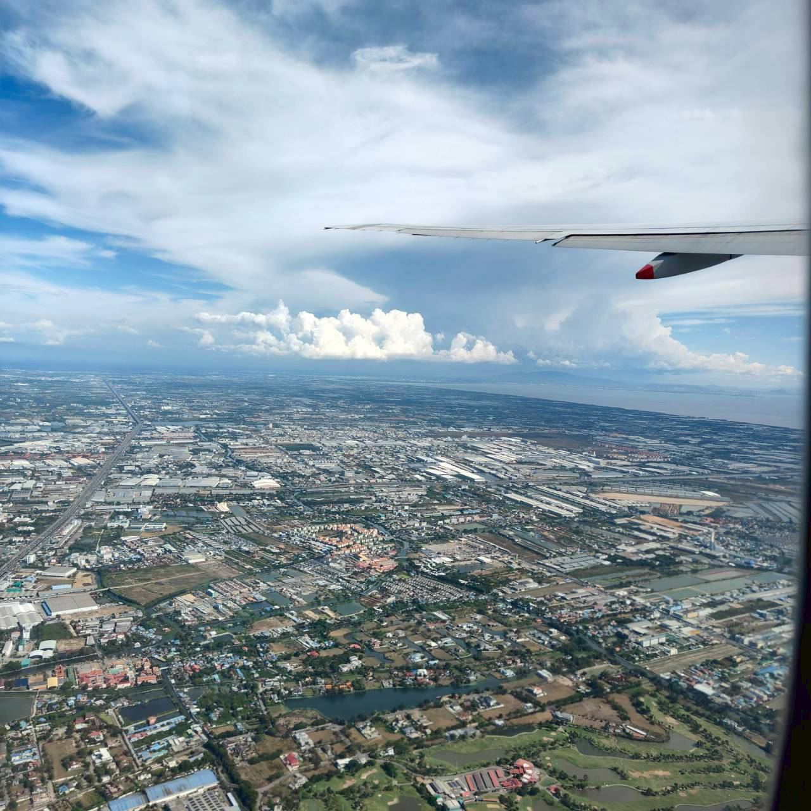
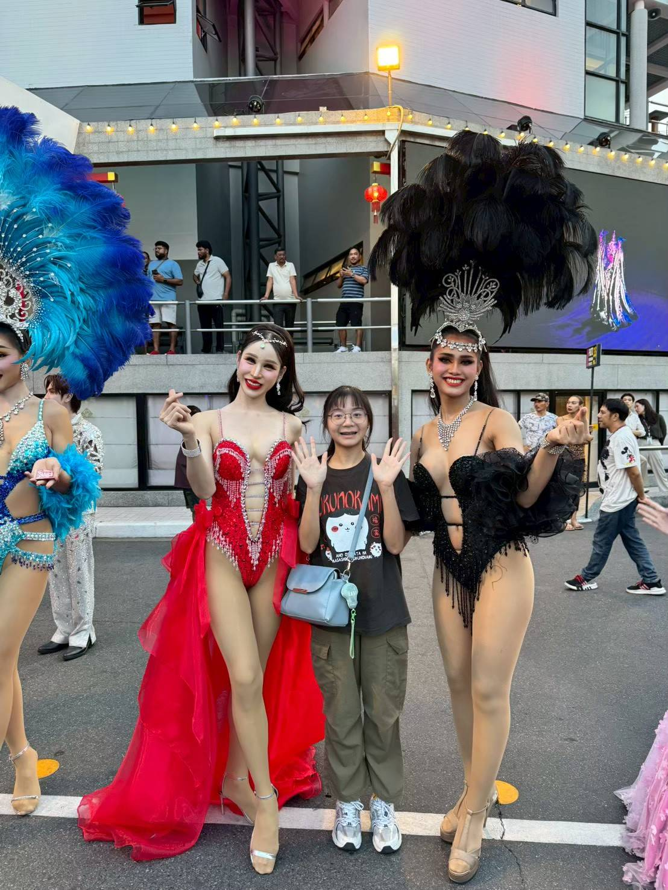
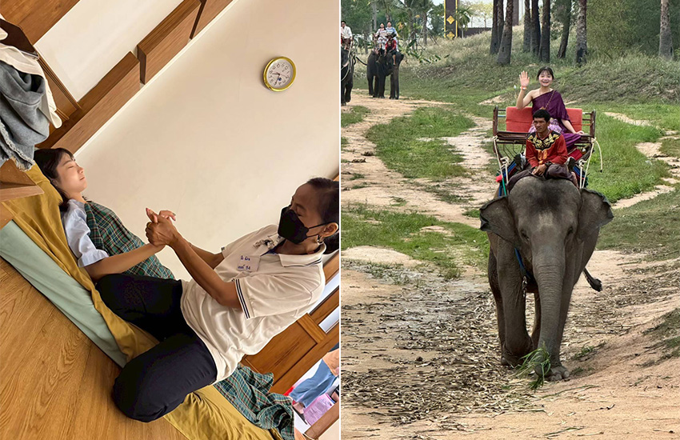
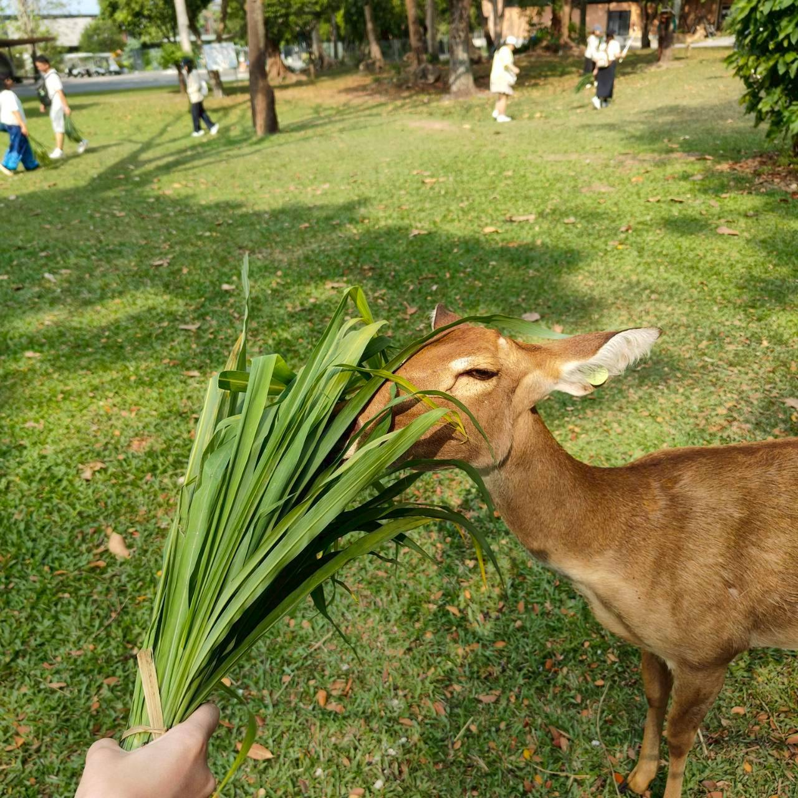
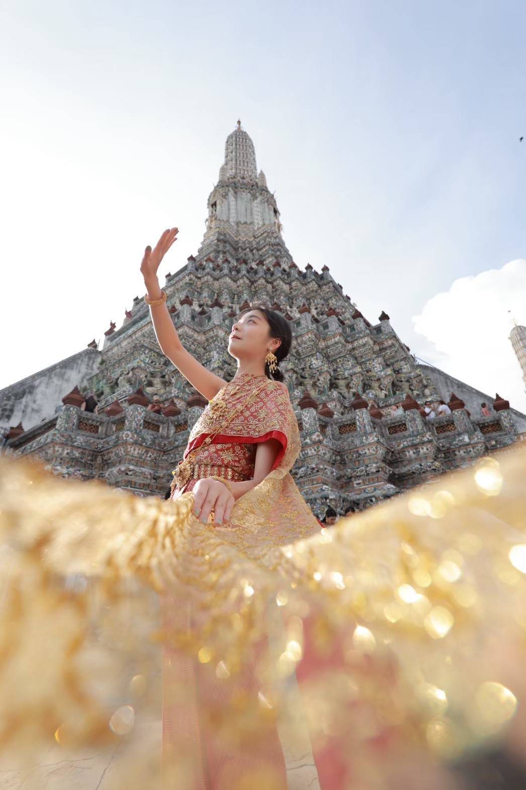
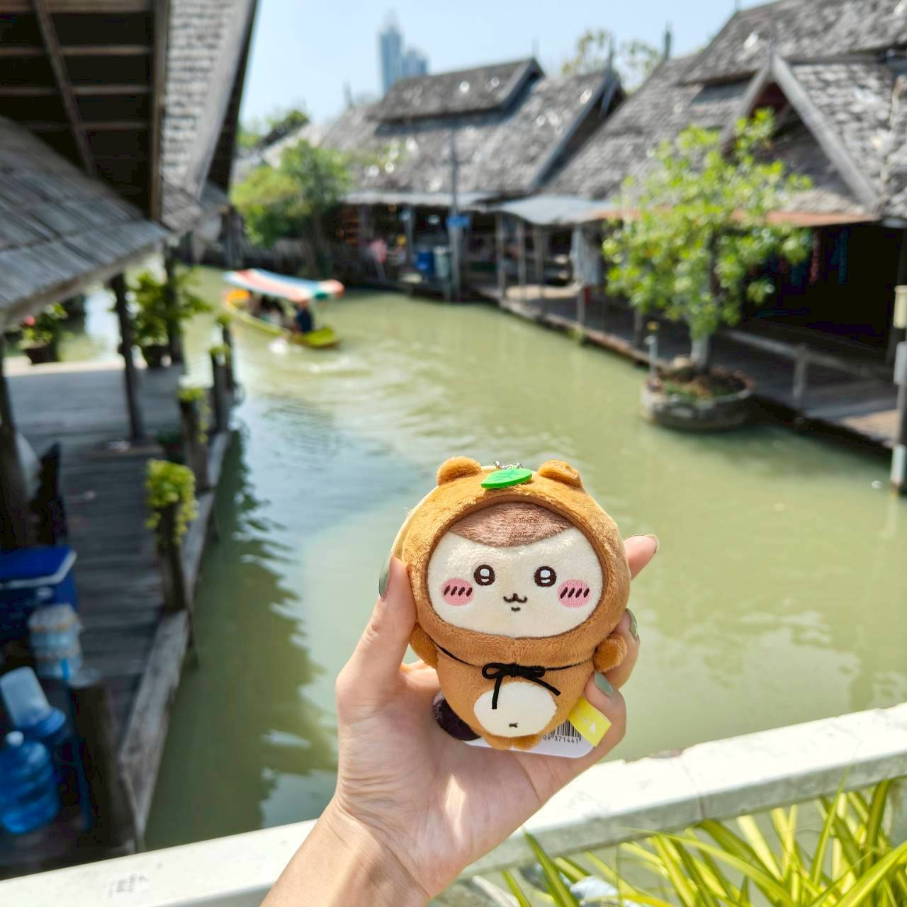
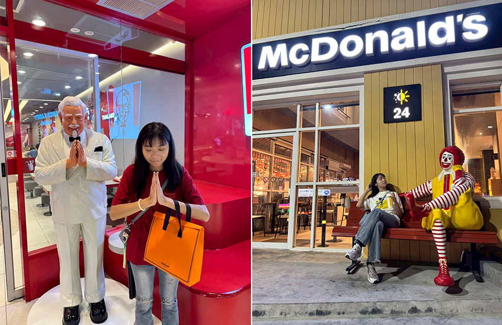

這是我第一次出國。
從小到大，身邊的人總是將出國視為稀鬆平常的事，但對我而言，它更像是一縷飄忽的絮，彷若觸手可及，卻始終少了機會碰觸。於是在我就業數月後，決心捏著錢包，簽署跟團泰國的合約。將一切規劃，交給專業的旅行社。
 |
終於要成行了！
坐上飛機那刻，我還有些恍惚。
「要起飛了嗎？」
「能平安著陸嗎？」
「上至萬米高空會是什麼感覺？」
直至座艙廣播響起、飛機開始加速，迎面而來的風切感與短暫的失重感，瞬間阻斷了所有思緒，只剩下一個清晰的念頭「真的出國了！」。
多虧暈機藥發揮效用，下機後輾轉乘車至芭達雅，身體無恙，僅是飢餓與疲憊纏身，但仍期待著當晚的大行程「Alcazar 人妖秀」。久聞泰國對第三性開放且尊重，但親眼看到秀場中的表演者，帶著自信的舞動、與觀眾互動，不停地切換背景、音樂，每一段表演都充滿自信與張力，彷彿在用盡全力展現自己的光芒，好像到了新世界一般。觀秀結束後，當然要入境隨俗與人妖姐姐們合照。最尊重他們、也最對的起觀眾身分的作法即為給予小費換取合照。
 |
如圖，兩位都非常熱情，甚至合照時還不避諱地托著我的臀部，讓我在合照中顯得更挺拔些。那一刻，觀眾與表演者之間的距離，似乎也變得親近許多。
第二天去往爽泰莊園體驗潑水節、騎大象與水果大餐，但對我而言重頭戲還是晚上的古法按摩。聽聞泰式按摩有著舒緩全身的魔力，跑了兩天行程的我自然充滿期待。導遊教學：「如要小力可說『包包』，大力點可說『娜娜』」。滿心期待秀一點泰文，沒想到泰國人大多會說中文。按摩阿姨剛入內準備時，就用中文說了「會痛跟阿姨講」，我只能默默接受這場力度適中的洗禮。總之，從頭到腿再到腳趾頭，都被仔細照料。毛巾覆蓋於額頭處的溫熱，讓人按著按著就失去意識，是很不賴的體驗。
 |
第三天來到綠山動物園。由於行程緊湊，倉促地在大門處領了草，開始團體遊園。導遊建議可將草餵給附近的鹿，但猜測這些鹿早已見慣遊客，食草膩味，各個興致缺缺、不賞臉，我們只能一路拿著草，期待有動物願意給點面子。總體感受與木柵動物園差不多，園內有販賣炸水餃和類似運彩的東西，這些算是比較稀奇。
 |
下午去往泰國必遊之鄭王廟，其壯麗莊嚴，真讓人從遠處觀看就生出敬仰之心，但也不待我敬仰多久，即趕著去租衣的店舖換泰服攝影。如圖所示，未經修圖就足夠「照騙」，是我此行最滿意的行程了。
 |
夜遊湄南河，亦是新奇。吵嚷的船艙上下層，皆有駐唱歌手在活絡氣氛，大家取用 buffet，雖是粗茶淡飯，但感受著行船的微微搖晃感，與波光瀲豔、燈火倒映的河景，也算是別有一番風味。
第四天，也幾乎是行程的結尾了，至丹能莎朵歐式水上市場，搭乘手搖船。最為特色的是，船夫臂力驚人。別小看這些船夫，很多看起來是長者或女性的人，其實都能輕鬆划動一艘載著四人以上的船。他們不僅划得動，還非常樂於多接客人於水道市集來回穿梭。坐在船上，左右兩側會有諸多攤販，販賣榴槤煎餅、泰奶、手繪圖框、包包、木雕等。
 |
需注意的是，來這裡務必殺價！落地泰國已 4 天，物價莫說是瞭若指掌，至少也是略懂，請記得放下你的矜持，熱情地使用中泰文，手腳揮舞、胡言亂語地殺價！
以下示範：「莎瓦迪卡~~姐姐，拜託拜託！便宜便宜！cheap！cheap！」若攤販遞來計算機，請接過按取你心中的價碼，千萬不要留手！畢竟，他們比你更懂這場遊戲！受此一關，我帶回便宜的後背包、青蛙木魚等，這裡就不講明價格了，畢竟我也不想買貴還被迫知曉。總之，戰果豐碩。
最後一站，是著名的鐵路市集。特點在於，平時看似普通的市場，實際卻建立在鐵軌之上。火車進站時，廣播與鳴笛聲此起彼落，攤販與遊客迅速收拾遮棚與商品，為列車讓出一條通道。全程快速卻緩慢，即火車在進鐵路前行駛快速，但如攤販手腳或顧客還在拍照、挑選，則火車會大delay，是很奇特的場景，身在臺灣倒是希望不要經歷。
 |
五天四夜，很快就結束了。
此次泰國行，最滿意的行程莫過於鄭王廟的泰服體驗，以及夜晚的自由時間（掃蕩泰國7-11飲料，嘗試麥當勞、肯德基泰國限定品項的新奇）。如以小資旅遊為考量，建議可至泰國一訪，便利商店、攤販和泰國的語言能力，絕對讓你印象深刻！